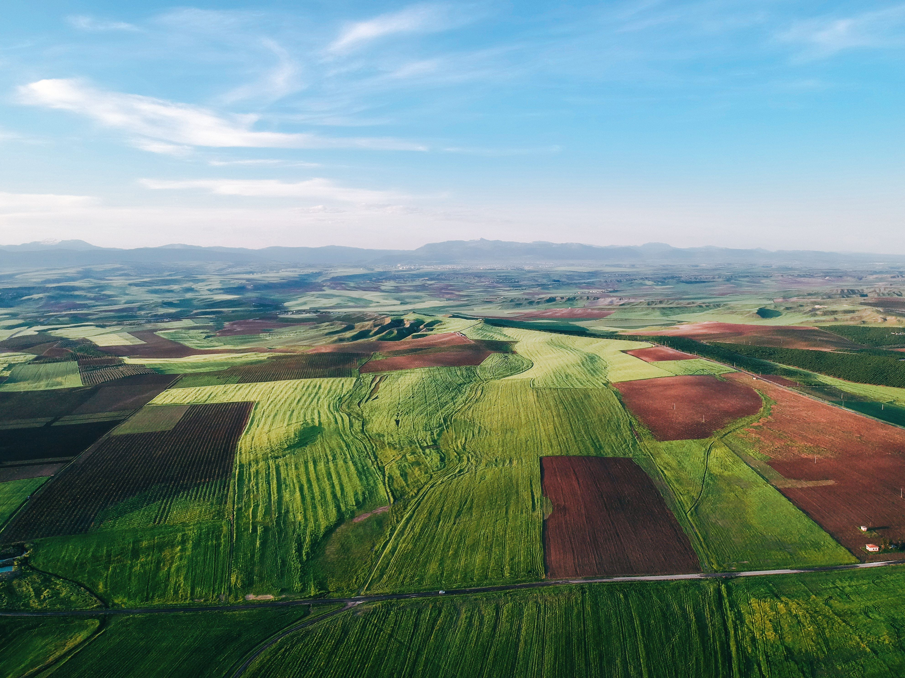

Access comprehensive, high-resolution land related datasets and analytical guidelines for sustainable research and national development.

Land use, cultivation and utilization tables, free to download as CSV.
Acts, schemes and guidelines on land records, forests, water and acquisition.
Published from state and central land authorities.
Land Lens is a unified national platform for accessing, analyzing, and understanding India's land-related data — built to support researchers, policymakers, and citizens in making informed decisions about sustainable land use.
High-resolution, verified datasets sourced directly from state and central land authorities.
Open access to policies, guidelines, and records in line with the Digital India initiative.
Designed for researchers, farmers, and administrators alike, with no barriers to entry.
Datasets and policy records are refreshed on a continuing basis as new surveys are completed.